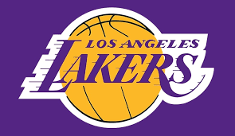
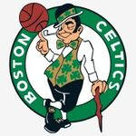
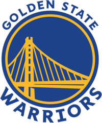
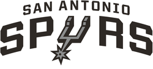

Top 5 teams
Lakers
«Лос-Анджелес Лейкерс» — американский профессиональный баскетбольный клуб из Лос-Анджелеса. Выступает в Тихоокеанском дивизионе Западной конференции, в Национальной баскетбольной ассоциации (НБА). Домашние игры проводит в «Стэйплс Центр», где также играет ближайший соперник по лиге «Лос-Анджелес Клипперс» Клуб был основан в 1946 г.
Boston Celtics
«Бо́стон Се́лтикс» — американский профессиональный баскетбольный клуб, располагающийся в Бостоне, штат Массачусетс. Выступает в Атлантическом дивизионе Восточной конференции Национальной баскетбольной ассоциации. Клуб был основан в 1946 году и за время своего существования 17 раз выигрывал титул чемпиона НБА.
Chicago Bulls

«Чикаго Буллз» — профессиональная баскетбольная команда, базируется в городе Чикаго, штат Ил линойс. Выступает в центральном дивизионе восточной конференции НБА. Домашние игры проводит в «Юнайтед-центр». Команда была основана в 1966 году и наиболее известна как одна из величайших династий в истории НБА, выигравшая шесть чемпионских титулов за восемь лет в конце XX века (1991—1993 и 1996—1998). Ко всем шести чемпионским титулам «Буллз» вели Майкл Джордан, Скотти Пиппен и главный тренер Фил Джексон. В сезоне 1995/96 «Буллз» выиграли 72 игры в регулярном сезоне, став первой командой
Golden State Warriors
«Го́лден Стейт Уо́рриорс» — американский профессиональный баскетбольный клуб из Сан-Франциско, Калифорния. Выступает в Тихоокеанском дивизионе Западной конференции Национальной баскетбольной ассоциации (НБА). Команда была основана в 1946 году как «Филадельфия Уорриорз» (англ. Philadelphia Warriors) в Филадельфии, штат Пенсильвания. В дебютном же сезоне команда выиграла чемпионат Баскетбольной ассоциации Америки (БАА), которая впоследствии стала Национальной баскетбольной ассоциацией, после слияния с Национальной баскетбольной лигой (НБЛ).
San Antonio Spurs
«Сан-Антонио Спёрс» — профессиональный баскетбольный клуб, выступающий в Национальной баскетбольной ассоциации. Команда была основана в 1967 году. Клуб базируется в городе Сан-Антонио, Техас. Домашние матчи проводит на арене AT&T-центр. «Сан-Антонио Спёрс» является одним из четырёх бывших участников АБА, неизменно принимающих участие в НБА, после того, как в 1976 году AБA и НБА слились в единую Лигу, и является единственной бывшей командой AБA, которая выиграла главный трофей НБА